PRÁCTICA GUIADA 01: DESPLIEGUE DE DOCUMENTACIÓN TÉCNICA CON PROPERDOCS Y TEMA "READTHEDOCS"
Terminal de Windows
Para abrir el Símbolo del sistema (terminal o intérprete de comandos), pulsa las teclas Windows + R, escribe cmd en el recuadro que aparece y pulsa Enter.
1. INSTALACIÓN Y CONFIGURACIÓN DE GIT.
Paso 1: Descargar el instalador oficial
Nos descargamos la última versión de GIT desde la web oficial GIT.
Paso 2: Ejecutar el instalador
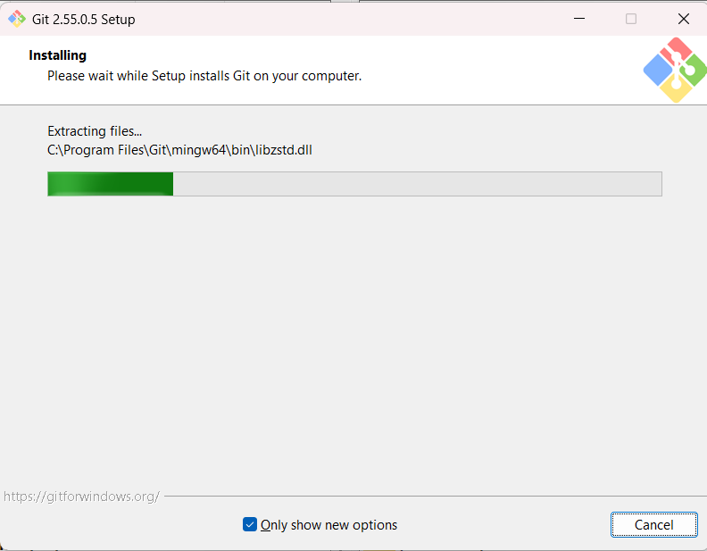
Paso 3: Configuramos GIT
Es necesario da un nombre de usuario y un correo electrónico para identificar quien trabja en el repositorio. Para ello, abrimos el CMD y escribimos las dos instrucciones siguientes:
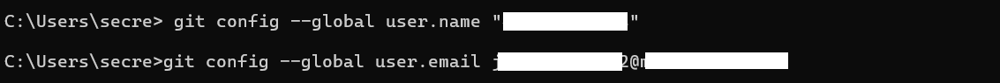
Paso 4: Verficamos la instalación
Es necesario da un nombre de usuario y un correo electrónico para identificar quien trabja en el repositorio.
2. CONFIGURACIÓN DEL CLIENTE DE TERMINAL DE GITHUB.
Paso 1: Crear el repositorio en GitHub.
Se debe crear con el nombre de proyecto2627 y hacerlo público. El archivo README.md debe incluir infiormación básica del proyecto y la asignatura.
Paso 2: instalar el cliente de GitHub para la terminal.
Entra en la página cli.github.com y sigue los pasos para instalar el cliente de terminal en el equipo, dependiendo del sistema operativo. En nuestro caso podemos optar por el archivo MSI si no queremos usar winget.
Paso 3: configura gh con tus credenciales de GitHub.
Ejecuta el comando `gh auth login y sigue los pasos siguientes:
-
Pulsamos
Enterpara elegir la primera opción, pues vamos a usar GitHub.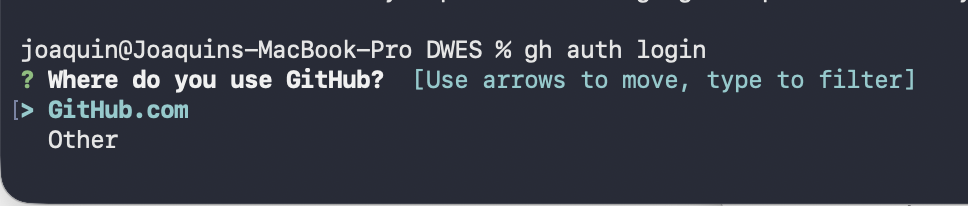
-
Pulsamos
Enterpara autorizar agha través de la web.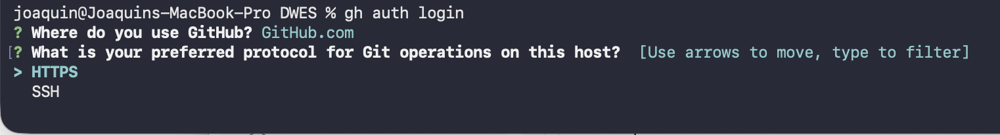
-
Escribimos
Yy pulsamosEnterpara usar nuestra credenciales.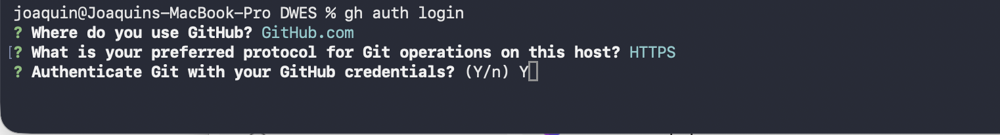
-
Pulsamos
Enterpara elegir la primera opción e identificarnos a través del navegador.
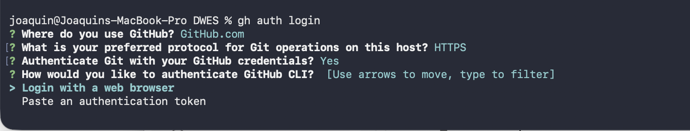
- Nos fijamos que haya generado el código (NO HACE FALTA COPIARLO, PUES SE HACE AUTOMÁTICAMENTE) y pulsamos
Enter. Se nos abrirá el navegador para que nos identifiquemos en GitHub si no lo habíamos hecho antes.
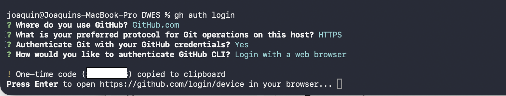
- Nos identificamos y pegamos el código del paso anterior.
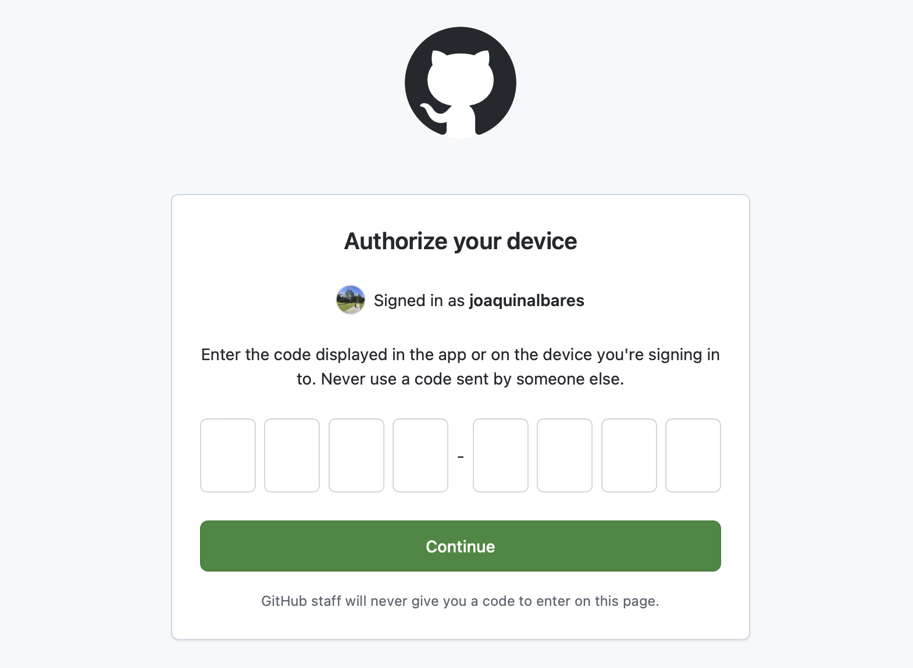
- Hacemos clic en
Authorize github
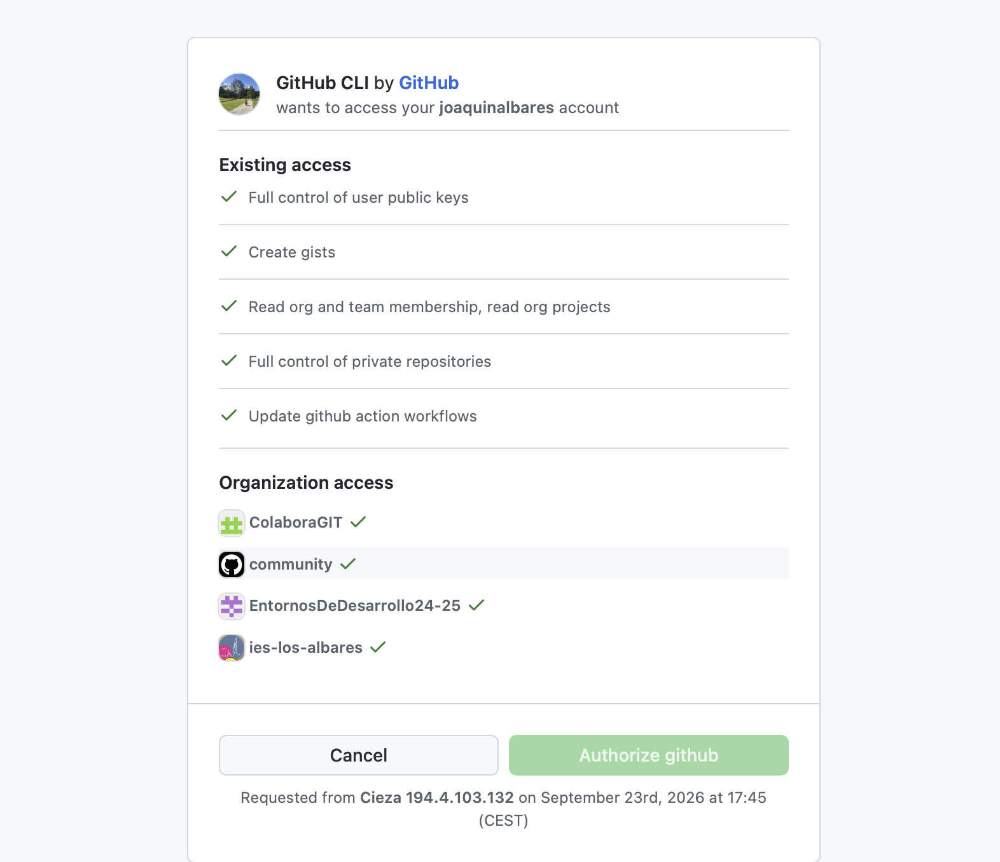
- Si todo ha ido bien, el proceso finaliza y vemos de nuevo el prompt de la terminal.
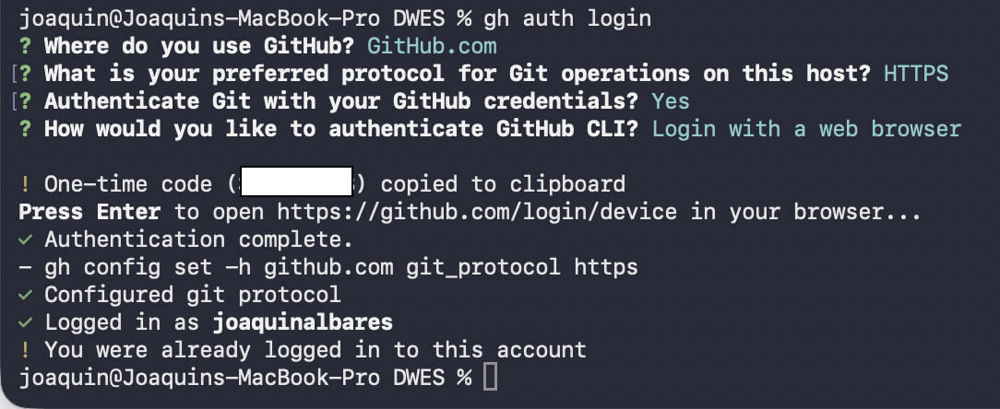
2. INSTALACIÓN DE PYTHON
PYTHON y ENTORNOS venv
Aunque lo recomendable es virtualizar cada proyecto de python mediante venvr, por simplicidad vamos a configura todo de manera global.
Esta es una guía paso a paso para descargar e instalar Python en sistemas operativos Windows.
Paso 1: Descargar el instalador oficial
- Abre tu navegador web y entra en el sitio oficial de Python: python.org.
- Elegimos la última versión estable.
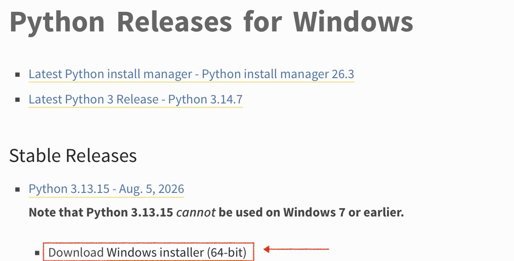
Paso 2: Ejecutar el instalador
- Ve a la carpeta de Descargas de tu ordenador y haz doble clic sobre el archivo ejecutable
.exedescargado (ejemplo:python-3.12.x-amd64.exe). - Aparecerá la ventana inicial del instalador.
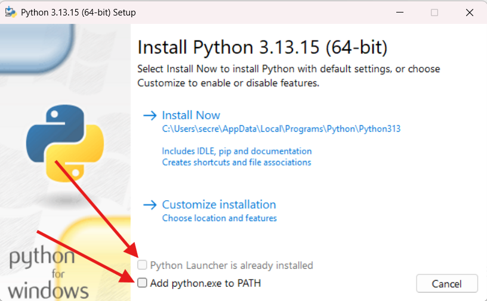
Paso 3: Marcar la opción del PATH (¡fundamental!)
Antes de hacer clic en cualquier botón de la ventana del instalador, debes marcar la casilla inferior que dice "Add python.exe to PATH" (o "Add Python to environment variables").
¿Por qué es importante?
Al marcar esta casilla podremos ejecutar Python y sus herramientas (como pip , que es la que vamos a necesitar) desde cualquier ventana de comandos (Terminal o CMD) sin tener que configurar variables de entorno manualmente.
Paso 4: Iniciar la instalación
- Una vez marcada la casilla del PATH, haz clic en "Install Now".
- Si Windows te pide confirmación mediante la ventana de Control de cuentas de usuario ("¿Deseas permitir que esta aplicación haga cambios en el dispositivo?"), haz clic en Sí.
- Espera a que se complete la barra de progreso (Setup Progress).
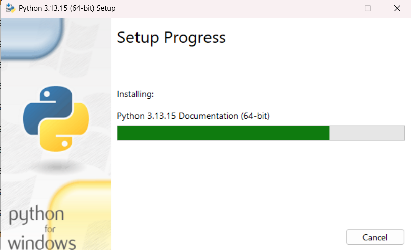
Paso 5: Finalizar la instalación
- Cuando la instalación concluya con éxito, verás el mensaje "Setup was successful".
- Si ves una opción al final que dice "Disable path length limit", se recomienda hacer clic en ella (elimina la restricción de Windows de 260 caracteres para rutas de archivos largos).
- Haz clic en el botón Close.
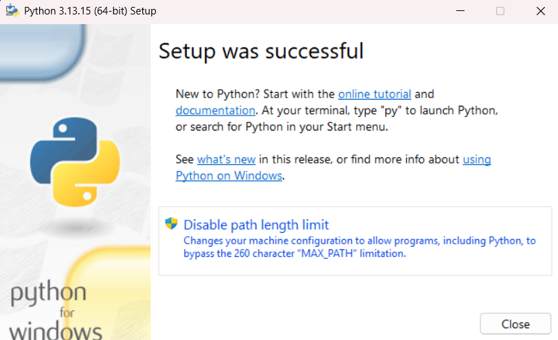
Paso 6: Comprobar que Python se ha instalado correctamente
- Abrimos una ventana de terminal.
- Escribe el siguiente comando y pulsa Enter:
python --version
- Si la instalación ha sido correcta, el sistema responderá mostrando la versión instalada (ejemplo:
Python 3.12.2).
┌──────────────────────────────────────────────────────────────┐
│ C:\Users\Usuario> python --version │
│ Python 3.12.2 │
│ │
│ C:\Users\Usuario> pip --version │
│ pip 24.0 from C:\...\python312\Lib\site-packages... │
└──────────────────────────────────────────────────────────────┘
Paso 7: ¿Y SI NO FUNCIONA PIP?
Si tras instalar Python ejecutas pip en la terminal o símbolo del sistema (CMD) y obtienes un mensaje de error como «'pip' no se reconoce como un comando interno o externo» o «command not found», significa que el sistema operativo no sabe dónde encontrar el ejecutable de pip.
Esto sucede principalmente porque el ejecutable de Python/pip no está en el PATH.
Solución: Añadir Python al PATH automáticamente
- Vuelve a ejecutar el instalador
.exede Python que descargaste. - Selecciona la opción "Modify" (Modificar).
- Avanza en las pantallas asegurándote de que la opción "pip" esté marcada en Optional Features.
- En la pantalla de Advanced Options, marca la casilla "Add Python to environment variables".
- Haz clic en Install y, al finalizar, reinicia la ventana de la terminal/CMD.
SOLUCIÓN ALTERNATIVA
Descarga el script https://bootstrap.pypa.io/get-pip.py y ejecútalo
python get-pip.py
3. INSTALACIÓN DE PROPERDOCS
Para elaborar la documentación de nuestro proyecto,vamos a instalar la herramienta properdocs.
ENTORNO DE INSTALACIÓN
En nuestro caso, y dado que no vamos a desarrollar en python, todas las librerías las instalaremos globalmente sin activar entornos virtuales de python.
Antes de instalar las librerías vamos a actualizar pip:
pip install --upgrade pip
Una vez actualizado, ya podemos instalar properdocs y dos temas adicionales: mkdocs y material:
pip install properdocs properdocs-theme-mkdocs mkdocs-material
Para verificar que la instalación se ha realizado correctamente, ejecuta:
properdocs --version
4. INICIALIZACIÓN Y CONFIGURACIÓN DEL PROYECTO
Paso 1: Clonar el repositorio remoto
En primer lugar, y para asegurarnos que trabajamos con el repositorio de GitHub y que nuestros cambios se van a sincronizar correctamente, vamos a descargarnos nuestro repositorio. Para ello, en GitHub, pulsando el botoón verde code y eligiendo la pestaña GitHub CLI, vemos el comando que tenemos que escribir par clonar nuestro repositorio.
gh repo clone joaquinalbares/proyecto2627
Important
- Cada uno clonará su repo, no el del profesor.
- Se recomienda crear una parpeta GitHub dentro de la carpeta de usuario para tener todos los repositorios en el mismo sitio.
Ahora accedemos al repositorio en inicializamos un nuevo proyecto de ProperDocs dentro de la carpeta actual:
cd proyecto2627
properdocs new .
Este comando habrá creado la siguiente estructura en tu directorio:
docs/
└── index.md # Página principal de la documentación
properdocs.yml # Archivo de configuración global
Paso 2: Configurar el archivo properdocs.yml
Abre la carpeta del proyecto con tu editor preferido (recomiendo Zedhttps://zed.dev/) y sustituye el contenido del archivo properdocs.yml por la siguiente configuración completa que activa el tema readthedocs y organiza la navegación del sitio:
site_name: "Proyecto Intermodular"
site_description: "Proyecto Intermodular del Ciclo Formativo de Desarrollo de aplicaciones Web"
site_author: "Alumno DAW - IES Los Albares"
# Selección del tema Read the Docs
theme:
name: readthedocs
highlightjs: true
hljs_languages:
- php
- bash
- json
- html
# Estructura de navegación lateral
nav:
- Inicio: index.md
# Opciones adicionales
markdown_extensions:
- tables
- codehilite
6. PREVISUALIZACIÓN Y COMPILACIÓN
Inicia el servidor interno de pruebas de MkDocs:
properdocs serve
Abre tu navegador e introduce la dirección local indicada por la terminal (por defecto, http://127.0.0.1:8000/). Verás el sitio que ha generado con la interfaz temática de Read the Docs cargada con tu contenido. Cualquier cambio que guardes en los archivos .md a partir de ahora y mientras estés sirvinedo el sitio, se actualizará automáticamente en la pantalla.
Podemos detener el servicio pulsando Ctrl+C.
6. PUBLICACIÓN EN GITHUB PAGES
Cuando queramos publicar nuestro sitio para que sea visible, podemos usar el comando que proporciona properdocs, y que funcionará correctamente sin hacer ninguna configuración más si hemos seguido todos los pasos de esta práctica.
Para ello escribimos:
properdocs gh-deploy
Y se iniciará el proceso de creación de ramas, configuración y publicación del sitio manera automática. Emitiendo unos mensajes parecidos a los siguientes:
INFO - Cleaning site directory
INFO - Building documentation to directory: /Users/joaquin/GitHub/proyecto2627/site
INFO - Documentation built in 0.11 seconds
INFO - Copying '/Users/joaquin/GitHub/proyecto2627/site' to 'gh-pages' branch and pushing to GitHub.
Enumerating objects: 17, done.
Counting objects: 100% (17/17), done.
Delta compression using up to 8 threads
Compressing objects: 100% (8/8), done.
Writing objects: 100% (9/9), 3.50 KiB | 3.50 MiB/s, done.
Total 9 (delta 7), reused 0 (delta 0), pack-reused 0 (from 0)
remote: Resolving deltas: 100% (7/7), completed with 7 local objects.
To https://github.com/joaquinalbares/proyecto2627.git
62746d3..5e31d06 gh-pages -> gh-pages
INFO - Your documentation should shortly be available at: https://joaquinalbares.github.io/proyecto2627/
Si esperamos unos minutos, ya podremos ver nuestra página publicada en Internet: